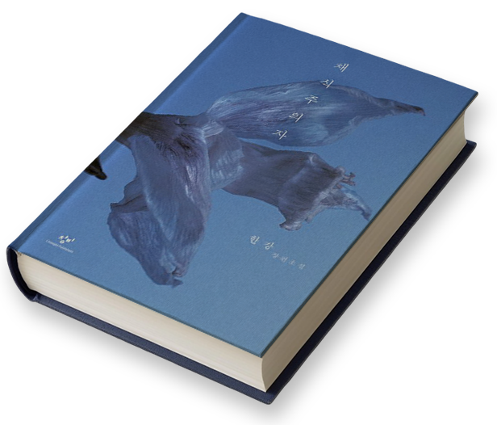
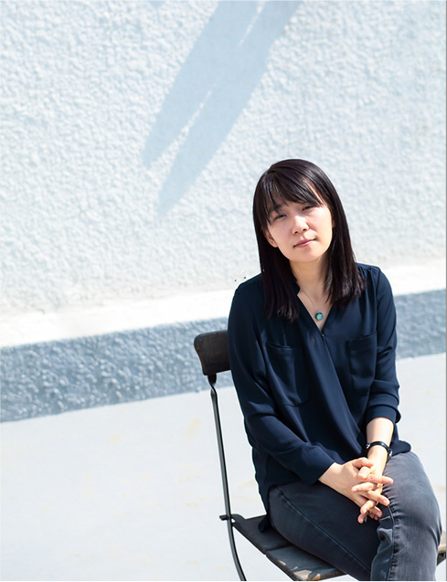
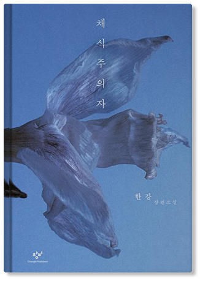

The Vegetarian
“
한번만. 단 한번만 크게 소리치고 싶어.
캄캄한 창밖으로 달려나가고 싶어.
그러면 이 덩어리가 몸 밖으로 뛰쳐나갈까.
그럴 수 있을까.

한양사이버대학교 컴퓨터공학과 은초희

Han Kang
2024년 한국 최초의 노벨 문학상 수상이라는 쾌거를 이루며 세계 문학사의 거장으로 우뚝 섰다. 일찍이 《채식주의자》로 부커상을 거머쥐며 전 세계에 이름을 알린 그는 인간의 폭력성과 그에 저항하는 존엄을 시적인 문체로 집요하게 탐구해 왔다. 특히 한국 현대사의 비극을 다룬 《소년이 온다》와 《작별하지 않는다》를 통해 역사적 트라우마를 인류 보편의 숭고한 서사로 승화시켰다는 평가를 받는다.
시적인 문체와 강렬한 서사를 바탕으로 인간의 폭력성과 그에 저항하는 연약한 존재들의 존엄을 집요하게 탐구하며, 육체와 영혼, 삶과 죽음의 경계를 섬세하게 파고든다.
이러한 작품 세계는 독자들에게 깊은 내면적 울림과 성찰을 안겨주며, 한강을 한국 문학의 자부심을 넘어 인류 보편의 고통을 어루만지는 세계적인 거장으로 자리매김하게 했다.

어느 날 갑자기 육식을 거부하고 채식을 선언한 평범한 아내 '영혜'의 변화로 극은 시작된다.
영혜의 선언은 가부장적인 가족 공동체에 균열을 일으키고, 육식으로 상징되는 일상의 폭력에 맞서는 처절한 투쟁으로 변모한다.
아내의 변화를 이해하지 못하는 남편, 처제의 몽고반점에서 예술적 영감을 얻어 탐닉하는 형부, 그리고 파국을 지켜보는 언니의 시선이 차례로 교차한다.
영혜는 거듭되는 폭력 속에서 스스로가 동물이 아닌 식물이 되기를 갈망하며 서서히 죽음에 가까워진다.
<채식주의자>는 한 여자가 인간의 세계를 벗어나 식물의 세계로 망명하는 과정을 통해 인간 본성의 폭력성과 구원의 가능성을 날카롭게 질문하고 있다.